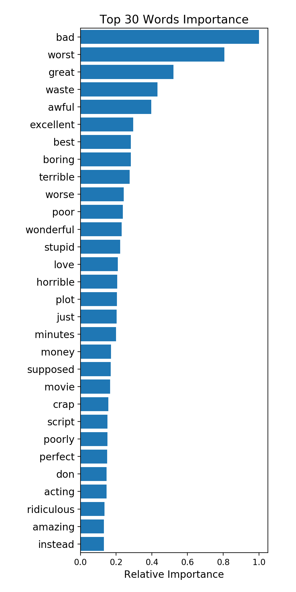

Movie Review Visualization
STAT 542 Project 4 Part II, by Jifu Zhao & Jinsheng Wang
1. Top Positive and Negative Words


The above figures are from Logistic Regression
with Ridge Penalty and Random Forest model
2. Detailed Text Analysis
id: 12311_10
Naturally in a film who's main themes are of mortality, nostalgia, and loss of innocence it is perhaps not surprising that it is rated more highly by older viewers than younger ones. However there is a craftsmanship and completeness to the film which anyone can enjoy. The pace is steady and constant, the characters full and engaging, the relationships and interactions natural showing that you do not need floods of tears to show emotion, screams to show fear, shouting to show dispute or violence to show anger. Naturally Joyce's short story lends the film a ready made structure as perfect as a polished diamond, but the small changes Huston makes such as the inclusion of the poem fit in neatly. It is truly a masterpiece of tact, subtlety and overwhelming beauty.
id: 8348_2
This movie is a disaster within a disaster film. It is full of great action scenes, which are only meaningful if you throw away all sense of reality. Let's see, word to the wise, lava burns you; steam burns you. You can't stand next to lava. Diverting a minor lava flow is difficult, let alone a significant one. Scares me to think that some might actually believe what they saw in this movie.Even worse is the significant amount of talent that went into making this film. I mean the acting is actually very good. The effects are above average. Hard to believe somebody read the scripts for this and allowed all this talent to be wasted. I guess my suggestion would be that if this movie is about to start on TV ... look away! It is like a train wreck: it is so awful that once you know what is coming, you just have to watch. Look away and spend your time on more meaningful content.
id: 5828_4
All in all, this is a movie for kids. We saw it tonight and my child loved it. At one point my kid's excitement was so great that sitting was impossible. However, I am a great fan of A.A. Milne's books which are very subtle and hide a wry intelligence behind the childlike quality of its leading characters. This film was not subtle. It seems a shame that Disney cannot see the benefit of making movies from more of the stories contained in those pages, although perhaps, it doesn't have the permission to use them. I found myself wishing the theater was replaying "Winnie-the-Pooh and Tigger too", instead. The characters voices were very good. I was only really bothered by Kanga. The music, however, was twice as loud in parts than the dialog, and incongruous to the film.As for the story, it was a bit preachy and militant in tone. Overall, I was disappointed, but I would go again just to see the same excitement on my child's face.I liked Lumpy's laugh....
id: 7186_2
Afraid of the Dark left me with the impression that several different screenplays were written, all too short for a feature length film, then spliced together clumsily into this Frankenstein's monster.At his best, the protagonist, Lucas, is creepy. As hard as it is to draw a bead on the secondary characters, they're far more sympathetic.Afraid of the Dark could have achieved mediocrity had it taken just one approach and seen it through -- and had it made Lucas simply psychotic and confused instead of ghoulish and off-putting. I wanted to see him packed off into an asylum so the rest of the characters could have a normal life.
id: 12128_7
A very accurate depiction of small time mob life filmed in New Jersey. The story, characters and script are believable but the acting drops the ball. Still, it's worth watching, especially for the strong images, some still with me even though I first viewed this 25 years ago.A young hood steps up and starts doing bigger things (tries to) but these things keep going wrong, leading the local boss to suspect that his end is being skimmed off, not a good place to be if you enjoy your health, or life.This is the film that introduced Joe Pesce to Martin Scorsese. Also present is that perennial screen wise guy, Frank Vincent. Strong on characterizations and visuals. Sound muddled and much of the acting is amateurish, but a great story.
id: 2913_8
...as valuable as King Tut's tomb! (OK, maybe not THAT valuable, but worth hunting down if you can). I notice no one has commented on this movie for some years, and I hope a fresh post will spark some new comments. This is a film that I remembered only snippets of from childhood, and only saw recently when I tired of waiting for Fox to honour its own past, and hunted down the Korean DVD (in English, but with unremovable Korean subtitles). I won't go through another long plot description - suffice to say that seeing it for the first time in its proper widescreen format left me agape at the vistas and the scope of the film. The matte paintings still hold up, and the palace sets are truly breathtaking. But it is the smaller scale details that lend this film its depth and richness, offering a glimpse into the lifestyles of Egypt's poor as well as its elite. The bazaars, hovels, docks, embalming houses, and taverns are as fascinating as Pharaoh's throne room. While errors abound on the large scale (most notably the dynastic succession), the details are more meticulously researched than the vast majority of Hollywood's films. Visually, it's not without its flaws - the interiors are often too overly lit and colourful to blend seamlessly with the exteriors. Nevertheless, this is a movie that should be credited for being as audacious in the small as it is in the large. Tedious? In parts, absolutely. Overacted? Underacted? Yes, both - though 'understated' might be a more apt description. Too long? Absolutely not. I wished they had spent more time with Sinuhe's experiences in the House of Death, and among the Hittites, and less with his 'romance' with Nefer, though. Historically inaccurate? Yes, that too, but so was Shakespeare. Nobody chastises him for it. I appreciate historical accuracy as much as the next guy, but ultimately it has to be remembered that cinema is theater, not a history lesson.
id: 4396_1
This has to be one of the biggest misfires ever...the script was nice and could have ended a lot better.the actors should have played better and maybe then i would have given this movie a slightly better grade. maybe Hollywood should remake this movie with some little better actors and better director.sorry guys for disappointment but the movie is bad.If i had to re-watch it it would be like torture. I don't want to spoil everyone's opinion with mine so..my advice is watch the movie first..see if u like it and after vote(do not vote before you watch it ! ) and by the way... Have fun watching it ! Don't just peek...watch it 'till the end :))))))))) !!
id: 395_2
This is one of those movies I watched, and wondered, why did I watch it? What did I find so interesting about it? Being a truck driver myself, I didn't find it very realistic. No, I've never used a 'lot lizard', nor have I ever seen, nor heard about one traveling around the country in a brand new seventy thousand dollar RV, either.Same thing about a pimp whom has never sampled the lady in question (until the end of the movie, and well, he still really didn't...), and only getting 50 bucks 'a cut', when the prostitute gets $200.00 (well, $150.00 after his cut, yeah...).I still laugh at the lot lizard comment Ivey made (them's Lot Lizards, they'll screw anything with 20 bucks, and some are men dressed as woman... or something equally as weird), meaning, we're better then them, as we may still be prostitutes, but we get paid BETTER.Other then that, it's just a story of a young woman whom wanted something more from life then a dead end job while living at home (she's 18, remember?) and embarrassed by her mother basically doing the same thing (dead end job). At least she had a roof over her head and a job. She turned FIVE tricks on the road... I wonder if the $750.00 she made was worth it? I'd guess not.
id: 10616_1
The worst movie i've seen in years (and i've seen a lot of movies). Acting is terrible, there is no plot whatsoever, there is no point whatsoever, i felt robbed after i rented this movie. they recommended it to me mind you! a disgrace for terrible movies! stay away from this terrible piece of c**p. save your money !
id: 9074_9
Five medical students (Kevin Bacon, David Labraccio; William Baldwin, Dr. Joe Hurley; Oliver Platt, Randy Steckle; Julia Roberts, Dr. Rachel Mannus; Kiefer Sutherland, Nelson) experiment with clandestine near death & afterlife experiences, (re)searching for medical & personal enlightenment. One by one, each medical student's heart is stopped, then revived.Under temporary death spells each experiences bizarre visions, including forgotten childhood memories. Their flashbacks are like children's nightmares. The revived students are disturbed by remembering regretful acts they had committed or had done against them. As they experience afterlife, they bring real life experiences back into the present. As they continue to experiment, their remembrances dramatically intensify; so much so, some are physically overcome. Thus, they probe & transcend deeper into the death-afterlife experiences attempting to find a cure.Even though the DVD was released in 2007, this motion picture was released in 1990. Therefore, Kevin Bacon, William Baldwin, Julia Roberts & Kiefer Sutherland were in the early stages of their adult acting careers. Besides the plot being extremely intriguing, the suspense building to a dramatic climax & the script being tight & convincing, all of the young actors make "Flatliners, " what is now an all-star cult semi-sci-fi suspense. Who knew 17 years ago that the film careers of this young group of actors would skyrocket? I suspect that director Joel Schumacher did.
id: 9252_3
'The Mill on the Floss' was one of the lesser novels by Mary Ann Evans, who wrote under the male pseudonym George Eliot. I tried to read this dull and very turgid novel years ago, but was unable to finish it. I'll review this film version solely on its own merits, as I don't know how faithfully it follows the original novel.The film's opening credits are printed in an Old English typeface that suggests the mediaeval period, and so it's a very poor choice for a film with a 19th-century setting. (On the other hand, about halfway into the film, we see a close-up shot of a handbill advertising an estate auction. This handbill is set in authentic Victorian type fonts, and looks *very* convincing.) Most of this film is extremely convincing in its depiction of the architecture and clothing of early 19th-century England. The precise location of this film's story is never disclosed, but - judging by the actors' accents - I'd place it as somewhere in the Cotswolds, perhaps Warwickshire.The plot, what there is of it, involves a mill that changes hands a couple of times (over a couple of decades) between two rival families, one wealthy and one working-class. I disagree with another IMDb reviewer who claims that James Mason has only a small role in this film. Mason has the largest and most central role in this drama, as the scion of the wealthier family. As the spoilt and petulant Tom Tulliver, Mason is darkly brooding and impetuous. His performance here belongs in a better film: it made me want to see 'Wuthering Heights' recast with Mason as Heathcliff.As this is a multi-generational saga (something which George Eliot did much better in 'Middlemarch'), several of the main roles in this film are split among two actors apiece: child actors in the prologue, adults in the main narrative. The prologue of this film features a very well-written scene, establishing Tom Tulliver as wilful and bully-ragging from an early age, and young Philip Wakeham as decent and thoughtful. Through hard labour, Philip has earned a halfpenny: Tom tries to bully it away from him, but is unwilling to take the coin by brute force: he wants Philip to *give* it to him. All the child actors in this movie, male and female, are talented and attractive. Unfortunately, all of the children speak their dialogue in posh plummy-voiced accents that are utterly unlike the accents of the actors and actresses who play those same roles as adults. This discrepancy calls attention to the staginess of the material. Regrettably, none of the later scenes are as good as this prologue.The climax features a crowd of labourers in a rainstorm, much better paced and photographed than the earlier scenes. But modern viewers (in Britain, at least) can no longer take this sort of material seriously. By now, practically every British comedian has done a "trouble at t' mill, squire" comedy routine, parodying precisely this subject matter, so I had difficulty watching this movie with a straight face.The character actress Martita Hunt is good in a small role, but the opening credits (in that Old English typeface) misspell her forename as 'Marita'. I'll rate this dull movie 3 points out of 10: one point apiece for James Mason's performance, the early scene with the children, and the authentic Victorian typesetting in that auctioneer's handbill.
id: 9896_9
I just saw this film at the phoenix film festival today and loved it. The synopsis was listed in our program as "an old Shakespearean actor invites his three children to his suicide party". I wasn't sure if I was going to see it because when I read about it I liked the idea of a "suicide party" it sounded very interesting to me, but "old Shakespearean actor" had me worried that the film would be kind of dry and boring. But I decided to give it a try. I am glad that I did. It was not dry and boring in the least, that dialogue was great, funny in a clever way, but not pretentious and difficult to understand. Peter Falk was terrific in this role, he stole the show. I also was pleasantly surprised by Laura San Giacomo's performance, usually she bugs me, but I enjoyed watching her in this film very much. I think Judge Reinhold's part could have been done better by another actor, at times he seemed kind of cheesy and it looked like acting, not like you were just watching this character. But the movie was so good I was able to forgive one actor's awkwardness. I would recommend this film to anyone and have already told a few people to see it as soon as it is available to the general public. Who knew suicide could be so hilarious?
id: 574_4
"The Love Letter" is one of those movies that could have been really clever, but they wasted it. Focusing on a letter wreaking havoc in a small town, the movie has an all-star cast with nothing to do. Tom Selleck and Alice Drummond had so recently co-starred in the super-hilarious "In & Out" (also about an upset in a small town), in which they were both great, but here they look as though they're getting drug all over the place. I can't tell what the people behind the camera are trying to do here (if anything), but they sure didn't accomplish anything. How tragic, that a potential laugh riot got so sorrowfully wasted.
id: 11182_8
Another fantastic offering from the Monkey Island team and though it was a long time coming and had to survive the departure of Ron Gilbert it's another worthy installment. My only gripe is that it was a little short seeming in comparison to the previous two, though that might be because of a glorious lack of disk-swapping. Roll on MI4.
id: 11656_4
This was included on the disk "Shorts: Volume 2"--a rather dull collection of short films. Shorts are among my favorite style of films but somehow the people assembling this second collection had a hard time finding quality content--and it wasn't nearly as good as the first volume or other shorts collections. This short film feels like it's woefully incomplete. There is a story, but so much in unanswered that the viewer, like me, feels a bit left out and unfulfilled.The film begins with a woman, her boyfriend and her Westie (that's a dog, by the way) going to a lonely beach. The lady speaks with an accent that, at times, is a bit difficult to follow. Given that I am hard of hearing, I sure would have loved if it had been closed captioned. Anyway, the boyfriend goes for a swim while she naps. When she awakens, her dog is gone. She panics and makes the guy follow her all about looking for the dog. They spend most of the time arguing and being disagreeable. Then, out of the blue, they stop to have sex. Later, they find the dog--end of story.As far as the characters go, both seemed rather dysfunctional and unlikable. She was a fussy and demanding lady and he seemed to have contempt for her. When you wondered why they were together, their little sex break showed what bond kept them together.Some might like the characterizations--I kept finding the people irritating and unreal--more like caricatures than people you might meet or know. Also, the payoff for all this just isn't worth the wait (unless you want to see the guy naked).
id: 2322_4
I'm not really much of an Abbott & Costello fan (although I do enjoy "Who's On First") and, to be honest, there wasn't much in this movie that would inspire me to watch any more of their work. It wasn't really bad. It had some mildly amusing scenes, and actually a very convincing giant played by Buddy Baer, but somehow, given the fame of the duo and the esteem in which they're generally held, I have to say I was expecting more. As the story goes, the pair stumble into a babysitting job, and during the reading of Jack & The Beanstalk as a bedtime story (with the kid reading it to Costello), Costello's Jack falls asleep and dreams himself into the story. There's a "Wizard Of Oz" kind of feel to the story, in that the characters in the dream are all the equivalents of real-life acquaintances of Jack, and the movie opens in black & white and shifts to colour during the dream sequence. The fight scenes between Jack and the giant and the dance scene between Jack and Polly (Dorothy Ford) are among the amusing parts of the movie. Polly, of course, also leads to one of the questions of the movie - what happened to her? Jack and gang apparently left her behind in the giant's castle! I know - it was just a dream, so who cares. Still - I wondered. There were also a couple of cute song and dance routines. My 4 year old giggled a bit during this, so she was able to appreciate some of the humour. I found it to be an acceptable timewaster, but certainly not anything that would convince you of Abbott and Costello as comic geniuses. 4/10
id: 8703_1
This movie was dreadful. Biblically very inaccurate. Moses was 80 years old when he led the people out of Egypt, the movie has him about forty. Moses was about forty when he fled Egypt, was gone for forty years, and was with them wandering for forty years. Moses was 120 years old when he died, and was denied the privilege of crossing over to the promised land. I realize movies use a lot of "poetic license" as the biblical account isn't that long, but, if making a biblical movie they still need to reflect the facts known, and keep the general flavor of the main biblical character, this movie fails in this aspect, and in many others.Even though the 1956 version has its problems as well, theatrically it was much better.
id: 7483_1
I don't think I've ever gave something a 1/10 rating, but this one easily gets the denomination. I find it hard just to sit through one of his jokes. It's not just that the jokes are so bad, but combine that with the fact that Carson Daily has zero charisma, can't set up or finish a punchline, and you've got a late night comedy recipe that will really turn your stomach.I have watched the show, never in its entirety, but many times still. It just creeps up on me after Conan. I usually watch a minute or two just to see if Carson daily is still the worst talk show host ever.Actually if you ever do see him interviewing a guest, it's just that, an interview. I feel so sorry every time he has a guest on and their confused smiles try to mask their body language that's screaming, "get me the hell away from this freak!" I do recommend watching the show, not for a laugh, but to ponder, how he got on the air and what he's still doing there. Watch as much as you can, I think you will find its complete awkwardness...interesting.
id: 6007_10
Excellent story-telling and cinematography. Poignant, biting social commentary.Superb effects. Well-filmed and acted.However, the parallel action between the present and the travel adventures (though very well done) at times drags on a little too much (about 3 hrs), and over-interrupts the flow of the story.I first read the book as a child, and enjoyed the parts about the giants and the tiny people -- but the book lost me when it got to the floating island and the land of the "yahoos"! Well, although the adventure plot may sound like a children's story, it's in fact a very adult story, full of symbolism about the moral decay in England at the time of Jonathan Swift, the author of the novel that the film is based upon.
id: 12424_4
I completely forgot that I'd seen this within a couple of days, which is pretty revealing in itself. The umpteenth version of Gaston 'Phantom of the Opera' Leroux's locked-door country-house mystery, I had heard that it was an engaging and witty update. So it appeared from the likable title sequence and a few neat touches in the opening scene, but the film very quickly ground to a halt and became vaguely tedious and wholly unsatisfying.As a mystery the major problem is that it is fundamentally unsolvable by the audience: like the worst Agatha Christies, it depends on a character appearing in the final act with a wealth of background information that we have not been privy to. As a film, be it comedy or thriller, the crucial problem is that characterisation is almost non-existent. With the exception of the killer, everyone is a face-value version of the typical suspects in the typical country-house murder story - reporter, endangered heiress, suspicious fiancé, scatterbrained scientist father (a surprisingly poor Michel Lonsdale), etc. There's no depth and little of interest, and the frequently over-ripe or misjudged performances don't help. You frankly don't care about anyone in it, so there's no jeopardy or suspense. Only Claude Rich and, in the last reel, Pierre Arditi get anything to work with, and only in the last reel does the film get close to a sense of resonance that is too fleeting to be really effective.For the rest, we get endless exposition and a couple of ineffective would-be comic set pieces (a promising one with a photographer trapped inside a grandfather clock is just too poorly thought through to pay off), with Dennis Podalydes reduced to Irving the Explainer for the last third of the picture. I'm not fond of country-house movies or Agatha Christie style whodunits, so those who are might cit it a lot more slack, but I found it a poor show. As Rich says when the mystery is revealed, "It's all rather something of a disappointment."
id: 4672_1
I like action movies. I have a softspot for "B" flicks with bad dialogue and wooden acting. So, I've been wracking my brain to come up with one of my guilty pleasures that was worse than this blockbuster. I can't. You'd be hard pressed to put together a bigger piece of cr*p than this Bruce Willis vehicle.Armageddon is the story (and I use that term loosely) of a team of "Super-Drillers" flying off to destroy an asteroid before it destroys the Earth. Realistic? Not really. But who cares? It's an action flick. I'm not blasting the premise.Minor spoilers:The movie begins with a couple of scenes designed to introduce the threat and the characters. Bruce Willis is the tough-as-nails leader of the team, and spends his first bit of screen time chasing around Ben Affleck with a gun for the unforgiveable act of sleeping with his daughter. For some reason, that didn't make me laugh. It was forced, like everything in this movie.The team is called in because they're the only people in the whole wide world who can drill the asteroid. Okay, I'm prepared to accept that premise if it gets us to the action - the supposed meat of the movie. More attempts at humor, with each character going out to do some crazy, nutty thing before blast off. Again, lame. Finally, they take off. Here's where the movie really pi**ed me off. They arrive on the rock, and set to work. Would you believe it, nothing works right and everything has a suspenseful countdown!!! Whoah! Ten, nine, eight... one - Oh, surprise surprise we saved the day again!!And don't even get me started on the jerky camerawork. When I saw it in the theater I thought I was going to be sick. I can only assume they were trying to cover up the gargantuan holes left by the insipid performances by cutting away to a different shot every few seconds (and this from someone raised on MTV - Mr short attention span himself).Just when I thought it couldn't get any worse... wait - there's a manufactured tearjerker ending that was so tacked on it made the rest of the film a virtual Citizen Kane.Summary: The witticisms weren't witty. The plot - well, I said I'd let that one go. The acting was bad. Really bad. Even Billy Bob couldn't rise above the script, which was worse. Camerawork - again, bad. (I didn't even mention the dumbest love scene in the history of motion pictures - think animal crackers).Rating: 1 out of 10. (I'm giving a half point for Steve Buscemi, who makes me smile against my will and another half point for the times I was able to look at the lovely Liv Tyler and attempt to ignore her acting performance) This is far and away the worst movie I've gone to see in the theater... ever.
id: 10841_3
This is one of the worst Sandra Bullock movie since Speed 2 But not quite that bad. I really lost it with those out of the blue not so "special effect". Guys, If you're an insomniac go with your girl to see this movie. I give it three sleepies!
id: 8954_7
Watched this flick on Saturday afternoon cable. Man, did it drag. I got the metaphors, symbolism, and all that stuff. No, I didn't care one way or another about the sexuality of the characters. But, the pacing of the story and the scripting almost put me to sleep.That is..... until Ruth Marshall got naked. If you're a breast-man who is not homo-phobic, you may want to rent it. Ruth has a lesbian sex scene that's pretty hot, and then a hetero sex scene that is a notch higher than most standard movie fare. Her jiggly D-cups made the film worth the watch.--The Mighty Avatar
id: 7392_1
I went to see "TKIA" with high expectations, which might have influence on my opinion on it. I have seen all of the Dogme films, and this TKIA, is by far the worst. The story intertwines with themes from Shakespeare's play: King Lear, but never succeeds in capturing the audience and making them care. The directing of the actors is very loose, even for Dogme style movies, and results in poor undefinable acting. The story lacks any dynamics whatsoever, and I lost interest very shortly. There are some scenes in the film which are there to shock the viewer, but I don't think they enhanced the story at all. Mifunes sidste sang and Festen are both Dogmefilms that proved to be well directed, and had good storylines, so I shall look forward to better Dogmefilms in the future. Perhaps Aake Sandgren's "An Invisible Man-Dogme 6" will prove to lift the quality again. For he is, like Vinterberg and S.K. Jacobsen a skilled and educated director.
id: 10288_8
All credit to writer/director Gilles Mimouni who fashioned this winding, twisting tale of deceit and betrayal. While keeping the utmost control, he maintains the audience at arm's length, never allowing them to become completely aware of the goings on. Even his clever denouement has you guessing.The three central performances are also top class, with Vincent Cassel, Romane Bohringer and Monica Bellucci doing their utmost to add to the mystery. Jean-Phillippe Ecoffey supplements strength in his supporting role. To give away plot details or character specifics would not be fair.Thierry Arbogast uses the camera effectively to sweep us through this enigma, and Cardine Biggerstaff's editing keeps the story a step ahead of us. The theme from Peter Chase is sublime in its marriage to the ideal of the script.Many may say Gilles Mimouni is trying to confront several deeper issues on the them of love. For me this is simply a haunting, elusive riddle that weaves a fascinating web. Only the French are capable of such tantalisation. Hollywood would have ruined this with a happy ending.Monday, March 2, 1998 - Hoyts CroydonNo-one does thriller quite like the French. When they get it right, they really get it right.Vincent Cassell is intriguing as the deceptive Max, Romane Bohringer obsessive as the new Lisa, and Monica Bellucci is mysterious as the first Lisa. The plot from Gilles Mimouni is a whirlwind of deliberate deception and fatally crossed wires.All credit must go to his manipulation of the clever plot, and the performances from the three leads. As Lucien, Jean-Phillippe Ecoffey is strong and emotional.Friday, January 15, 1999 - Video
id: 5343_4
As a writing teacher, there are two ending I never allow my students to use: "Then I woke up" and "Then I Got Run Over by a Truck." I am now going to add, "Then I got a bump on the head." I feel it's utterly unfair to use these tricks to cover up a lack of imagination. The whole issue of transmigration could have been handled with some intelligence and craft, yet, in this film, they either couldn't or wouldn't do that. I'm not saying it's totally worthless, but it is so predictable in its progress, except for the stupid ending. There are even gangsters who go to the police to get help from this guy. They should have done him in immediately. It's just a forgettable, borderline horror/sci fi film, with nothing new to offer.
id: 4950_1
I don't know why this has gotten any decent reviews as it could be the weakest horror comedy I've ever seen. Englund is just in it for a cameo and his performance is as unnecessary as most of the lame attempts at jokes (and scares). The direction is terrible and the acting is worse. It seems like every year producers are trying to make another Evil Dead but these weak unoriginal attempts are just stepping on the memory of a true horror classic.Whether its filmmakers saying, "this isn't a remake but its an 80s throwback (which is just as unoriginal in my opinion - Hatchet) or people trying to plug this with other horror classics, Its still misleading and wont make up for the lack of scares, horror, comedy, or even a decent movie for that matter.AVOID AT ALL COSTS!!!
id: 9257_4
This film was released in the UK under the name Blood Rites. It was banned outright and never submitted again for release.As The Ghastly Ones, it was supposedly a hit with the horror hungry denizens of New York City's famed 42nd Street Grindhouse circuit. If you are looking for some bloody horror, then you will find it in this film.Unfortunately to see the developmentally disabled Colin (Hal Borske) chomp down on a live rabbit, you have to put up with shaky 16mm camera work that makes Ed Wood look positively marvelous.Three sisters are to spend three days in the family homestead with their husbands before the old man's money is disbursed. Naturally, in such a situation, people start dropping dead. Family secrets are exposed and lots of blood is spilled, especially during a gruesome dismemberment.Maybe it was the bunny bit that the Brits objected to, I know I did.
id: 8689_3
Uncle Fred Olen Ray once again gives us a little of his Retromedia "goodness" in the form of this soft-core Cinemax non-classic.A numb-nut pair are out looking at rocks when they come across a swirling vortex a "black hole" as the intelligent dolts put it. Pretty soon an attractive cave girl from one million years ago happens into out time-line and she beds her way into the future. Pretty soon her studly other half makes his way into the future as well and blazes a path through the beds of the future.Ray again delivers a passable (but barely) smut-fest that has horrible acting but some decent skin. Yeah it's barely titillating but heh! If worse comes to worse it will cure you insomnia.S10 reviews: 1/5 or 3/10
id: 4480_2
OK, it's watchable if you are sick in bed or have nothing else to do. The suspension of disbelief required to get through this movie is significant though. First, in today's modern society do you believe college coeds get THAT committed to someone in that short of a period of time even if you are a "virtuous" Habitat volunteer who likes autistic kids? And the 2 week romance blossoms into a letter exchange that leads to John's "conflict" of whether to re-enlist right after 9/11/01...REALLY? He asks her what to do? Every guy we know was NOT gonna be sitting on the sidelines after those Towers came down(my husband was one of them and I love him and am proud of him for going) John's character is so flat. He's nearly expressionless the entire movie. He's good looking but not Spec Ops...he seems unsure not confident, quiet instead of a hell-raiser, no tattoos, gets into a "fight" with the preppy boys that is nothing more than a pushing match really...walks around without a cover on his head nearly the whole movie...and there are military technical flaws everywhere (epaulets upside down?). The war scenes are dumb...John and another guy heading off on their own...huh?, then other guy gets shot and John drags him 10 feet and starts giving buddy aid before securing the area or back-up arrival or even having their backs against cover...it's a gunfight for God's sakes, you don't stop fighting until its over...heck I wanted to shoot John in the back. Back home, when the truth is revealed and she spills the wine...we hated her for removing her shirt in his presence...WTH? break his heart and THEN tease him into adultery? She's a head case trollop. Best part of the movie is when he drives away from her...at least he had some self respect and honor there. Overall unbelievable story and we generally did not care about these characters or their love. Dismal!
id: 9286_10
If I was only allowed to watch one program in my entire life, I would definitely have to pick "The Chaser's War on Everything". Of all the satirical shows that have been on Australian television, I found "Chaser" to be the funniest of all. It is just so Amazing, the boys aren't afraid to do anything.Whether it's dress up as Hitler to get into a Polish Club, or push a MASSIVE ball of string around Melbourne to try out the tourism ad's or rock up to the Coke factory naked in a bath with $2.40 to buy some water. The Chaser boys will go there.In agreement with the comments above (and/or below) "The Chaser's War on Everything" is more popular than their previous program "CNNNN". But CNNNN was just as funny. Some unforgettable moments from that show... Clean up Cambodia!!! Classic.So anyway to stop me from Ranting further, I STRONGLY advise you to at least give Chaser a chance, you'll more than likely find it HILARIOUS!!!!
id: 12245_10
A truly terrific, touching film. Female melodrama at its finest, with a lot of comedy: great dialogue, characters and writing. Any woman can relate to the story because it's a classic: you're in love with "Mr. Right" but he has no interest in you until some guy who seems completely wrong comes along and you fall head-over-heels in love. But of course, it's not that simplistic. The characters are real and all of the performances are perfect. The movie is hilarious as well, every scene skewers society. I'd recommend this film to anyone who loves a well-written screenplay of humor and melodrama. You can relate to every character and the plot moves in unexpected directions. A great, underrated movie.
id: 7529_7
Pepe Le Pew can either really creep you out or totally sweep you off your feet. Either way, you can't help feeling a little awe on beholding this classic WB character. This commentater personally believes that Pepe was the inspiration behind other would be animated casanovas today from Cartoon Network's "Johnny Bravo" to Disney's Lumiere from "Beauty and the Beast". His unique brand of love making is to be wondered at in today's world where his antics would normally be slapped with a sexual harassment warrant and at least a 50m distance from all his victims. In this particular cartoon, a world weary cat decides to do an ultimate makeover and earn some respect for a change for pretending to be a skunk. All goes well, until Pepe arrives and promptly pursues the unfortunate feline with his overwhelmingly enthusiastic love-making.The groundwork for Pepe's many trademarks are laid in this cartoon. From his adorable "frenchified" love calls to that aggravatingly calm hop-chase of his. This cartoon only goes to show that as far as the world of cartoon fantasy is concerned, the most ardent wooer can go the distance...and have his beloved "pig-eon" leaving dust trails behind them.
id: 4_4
Alas, another Costner movie that was an hour too long. Credible performances, but the script had no where to go and was in no hurry to get there. First we are offered an unrelated string of events few of which further the story. Will the script center on Randall and his wife? Randall and Fischer? How about Fischer and Thomas? In the end, no real front story ever develops and the characters themselves are artificially propped up by monologues from third parties. The singer explains Randall, Randall explains Fischer, on and on. Finally, long after you don't care anymore, you will learn something about the script meetings. Three endings were no doubt proffered and no one could make a decision. The end result? All three were used, one, after another, after another. If you can hang in past the 100th yawn, you'll be able to pick them out. Despite the transparent attempt to gain points with a dedication to the Coast Guard, this one should have washed out the very first day.
id: 5299_2
"Get Shorty", "Out of Sight", "Jackie Brown" (and even "52 Pick-Up")--folks were finally getting Elmore Leonard right, making good movies out of his work. So, despite my students' warnings about how bad this movie would be, I couldn't resist renting it. I thought, How bad can it be? Oy, what a mistake, especially right on the heels of reading the book, which was lame (and too circularly self-referential, too) relative to the rest of Elmore Leonard's books. Still, the book was better than the movie. Leonard again trumps the weak and unskilled screen-writers who try to take over his book. The dialogue written for Steven Tyler was painful to watch. And the lyrics to the character Linda Moon's first song? My middle-schoolers write with more depth. Sad, sad, sad. Why even give it a star? Because Harvey Keitel and Uma Thurman are still fun to see on screen, and Andre 3000 didn't make a complete fool of himself.
id: 12077_8
I was still living with my parents when they aired this on dutch TV. Usually I was the one watching movies with the other's not caring. But somehow we all sat down and watched this movie. This kinda movie used to be aired at Wednesday-evening. It is the story of a woman who'll die soon. But before she dies she wants to make sure her ( many ) kids will have the best possible foster-parents. So we were watching this and my dad ( the most emotional of the four of us) started to cry. I followed almost immediately and before long my sister and mother were teared up too. There we were, totally moved by this simple but heartbreaking story. If you want a good cry, this is the one for you!
id: 10701_2
This movie stunk. There is not much more to it. The final fight looked like Walker taking on my grandmother, not some supernatural demon with the strength of ten men. I found the commercials more interesting. The plot twists and jokes could be seen coming a mile away. The only redeeming quality of this film was that it ended. Avoid this at all costs...unless you enjoy bad Chuck Norris movies.
id: 11579_1
****SPOILER ALERT**** My boyfriend, some friends, and I rented this movie as part of a marathon of really bad movies. We sort of knew what we were getting into. But the lack of plot, direction, and special effects actually left us hoping for a great (or passable) fight scene between the two main characters... the badly rendered swimming cobra and the super violent giant komodo (that ate people like scooping ice cream)... we sort of get this in the end, but had to be cut short due to possibly budget or time constraints? Its one redeeming quality is that its laughably bad, with many salient details pointed out by other readers. I recommend this movie if your into cutting onions to make yourself cry.
id: 10993_1
One of the worst movie I have seen in 2009 so far: The story hesitates between a silly thriller or a dumb comedy.As nothings happens, the void is filled with long, boring dialogs that don't make any sense! The cast is famous but doesn't bring any emotions except to fast-forward the play! And it happens in a plush seaside hotel that looks really gloomy. In comparison, the one of the "Shining" is funfair! NB: a lot of users think that it is located in the French Riviera! They are wrong! It isn't the south of France (Nice, Cannes) but totally the opposite: Cabourg & Normandy, to be simple the beaches of the D-Day! That's why the sea is as grey as the sky and there isn't sun!
id: 8913_1
I love watching steven seagal movies not because of the action of the great plot holes but just because it makes me laughoh it makes me laugh so hard this movie totally got no point and is ridiculous compared to this movie Pearl harbor rocks!!! and Ben affleck need no acting school at all just to give a impression how bad it isfirst off all there so many goofs and bad acting its just getting worse like when steven is try to get out of jail a chopper lands at first the security notice and they led them land when they fly away all of the sudden a guard start shootingor when he killed that guy in the car he and treach both walk away you can't see no oil on the ground behind him steven notice that there is oil without even watching treach trows a lighter and the car blows upand there are plenty of more goofs Steven uses his basic action when someone is pointing a gun at him he grabs it and shoot him totally bullshit!!! like some gangster would let that ever happen.the acting is also very worse at the fight scene in the jail outdoor place you can see steven clearly wait to come in action just rewind it a couple of time and you notice the bad actingits just makes me laugh i hope one day it comes to the cinema's here in Holland then i'll go there with as many friends as possible just to laugh my self to death
id: 1350_3
I saw it tonight and fell asleep in the movie.That is something that I have not done since - I have never fallen asleep at the movies.I LOVE the original and have seen it several times and recommend it to everyone. This may have been the problem but I do not think so, because there were a couple of bright spots that showed if done right they could have made this movie work.Bette was under used and Anne was over used and miscast.I do not know why English or anyone for that matter let this go out in that condition.They billed this as a Sex in the City but better? Not a chance I liked Sex in the City a lot and was disappointed by this movie.So do not waste your money on this movie - go see anything but this!
id: 3804_2
...but other than that, there's almost no redeeming social value to this sequel to the original Poseidon Adventure. Where the heck are all the people from the original, including the rescue crew? Michael Caine undergoes his most humiliating performance to date (although he later trumps himself with Jaws 4 down the road). Slim Pickens is just embarrassing as a stereotyped Texas, and generally you just have to wonder, "Why did they bother?" Irwin Allen's last stab at cashing in on the disaster craze, I guess.
id: 5025_3
Rossini once described rival composer Wagner's work as having "some wonderful moments...and some awful quarter-hours". Inuyasha, it seems, can also be described this way. It has many great episodes, but in between them are countless filler episodes. The entire series consists of about 175 episodes, of which I'd say at least 125 are filler or some sort of subplot (I didn't bother to count and I wouldn't be surprised if that number were in fact higher, though).Some of these filler episodes are actually quite enjoyable, though many are quite silly or dull. Nonetheless, the constant digressions start to wear thin after the first few seasons as the plot ends up progressing at a labored crawl for most of the series. Character development, too, slows down greatly and by the later seasons, the cast has become quite unchanging, resulting in increasingly stale jokes (particularly those concerning the monk, who's ironic traits start out as mildly humorous but grow tiresome when the jokes associated with them appear repeatedly).However, all of that isn't to say that Inuyasha is a bad series. It just isn't a great series the way Neon Genesis Evangelion, for example, is generally considered to be. As something to watch at the end of a hard day, it is nice, but it could never be confused with high art.
id: 5170_8
Just watched it on the Hallmark Channel. I was surprised to John Denver! This movie was full of clichés, but that is to be expected (a made for TV Christmas movie- come on!) The acting is as good as any other '80's made for TV movie. The story is, as I said before, predictable and cliché, but still good. If you are looking for a campy Christmas movie, it will certainly scratch your itch.I was also pleased when I learned that it took place in Georgetown, Colorado. It is a real mountain town west of Denver. Very cool as this is my home region.I was never a big John Denver fan (I always found him to be pretty foney) but he was a decent actor. He is very good as the good old boy like he played in this film.If you get the chance to watch it, than do. I'm sure it will be on again in 2007.
id: 8225_8
Ronald Coleman had been a star of the screen for several years when talkies came in, and what a boost it was to his career. His Oxford English accent is so enthralling I could listen to him recite the farmer's almanac and not be bored.Coleman plays Willie Hale, a 30ish playboy from a wealthy family who spends his time womanizing and gambling. Yet, he's a likable rogue - not only likable from the standpoint of the audience but by family and friends too. He has yet again gone broke due to his constant gambling and sells off his possessions in a foreign location to settle his debts and provide passage back home to England. When he gets there, he at first is met by a father who insists he'll kick him out - he's had it with Willie and his layabout ways. However, five minutes alone in a room with Willie and his charm, and Willie is not only forgiven by dad, dad has given him one hundred pounds to boot.Willie then goes for a day's recreation with his sister and her friend, Dorothy Hope (Loretta Young). Dorothy is set to be engaged to the Grand Duke Paul that very night, mainly just because her dad wants royalty in the family, and there is nobody else special in her life. That changes after her day with Willie, and soon there is a scandal brewing as Dorothy refuses to go through with the marriage as planned.Ronald Coleman is always a delight to watch in these early talking films he did for Sam Goldwyn where he is playing the confident adventurer or cad or both. He has a demeanor akin to Errol Flynn, but he is unable to display Flynn's physical agility due to a disabling wound he received during World War I. However, what he lacks in physical agility Coleman always made up in agility of soul. Loretta Young, only 17 when this picture was made, shows the beginning of her trademark sweet girl that can erupt into a ball of fire when the occasion calls for it. Myrna Loy plays Willie's girl from the past - Mary Crayle - a showgirl. Here Myrna is still playing a part similar to the exotic vamp parts she got stuck with so often over at Warner Brothers when she was a contract player from 1926 until shortly before this movie was made in 1930.This is pretty much a light and breezy romantic comedy from start to finish. If you're in a mood for the kind of escapist entertainment that lightened the hearts of audiences during the Great Depression, this little film fits the bill.
id: 6427_7
Footprints is a very interesting movie that is somewhat difficult to categorize. "Psychological thriller" is the most appropriate description I can think of. The female protagonist, Alice Cespi, discovers that she doesn't remember anything of the last three days. The only clue she has is a torn photo of a hotel. She is also haunted by a recurring, very vivid, dream about a science fiction movie that she believes she saw many years ago. In her pursuit of the truth behind her amnesia she doesn't trust anyone, but little by little it becomes obvious that she has visited the town where the hotel is located before. This is an exciting flick whose main virtue is that it is virtually impossible to predict how the events will unfold, and particularly, how it will end. The unusual loneliness of the main character and the unreliability of everyone else ensure that the good old paranoid feeling is present throughout the film, whereas beautiful colors and some spectacularly filmed sequences make this a visually attractive movie as well. The important part of the one and only Nicoletta Elmi, everyone's all time favorite redheaded obnoxious child star of Italian horror, is an extra bonus.
id: 3165_3
This love story between an American journalist and an Eurasian lady doctor does not contain much conflict, since she is largely Westernized (having studied in London), nor any fireworks, since she behaves rather restrained. What little interest the story manages to raise is knocked down further by their wooden dialogs. They are supposed to be two cosmopolitan intellectuals, but talk as if the words are put in their mouths by a Hollywood hack who is not much of one himself. The movie also suffers from an amazing lack of realism - a completely deserted beach in crowded little Hongkong, overrun by a million Chinese refugees? And a presumably accomplished American journalist in his 40s who doesn't know what a hysterectomy is? Hollywood ideas. Finally "the song". After hearing it an estimated twenty times throughout the movie, starting right with the credits, it tends to loose some of its emotional impact, sorry to say.
id: 7902_9
This is not your typical Indian film. There is some great sense of humanity, and the characters are pretty realistic. There is great dynamism in the interpersonal relationships, and there is a sense of guilt, grief, passion, passivity among the many characters. While seeing this, one gets a feel for the heavy burden of the 5000 years of layers and layers of history of social existence of one of the oldest civilizations. The final scene of an elephant walking away in the rural area was a great footnote to such a ancient civilization, and yet, human relations are still preserved and nurtured. Saw it on DVD, the two interviews with the director and the main actress are very interesting. Was surprised to learn that the movie has not done well (or not being shown) in India (... but maybe not too surprised). The artistic patrimony of rural societies is being slowly lost and its inheritance not picked up by younger generations, as some of the older musicians in the movie are no longer living today. Great film.
id: 8208_3
This movie tries to be more than it is. First of all, the acting is horrible. You have to get past the incredibly bad delivering of lines and terrible emoting. The plot is quite interesting. A shipwreck occurs (apparently because it was made out of strings and balsa wood), and a couple of guys find themselves on shore. If this weren't bad enough, some guy named Count de Sade is living there as well. He lives in fear of pirates and has gone utterly insane. Anyway, he has a large slave, a young woman, and some dogs. There's another woman who doesn't speak and his wife, who is a leper. Anyway, things get bad as these men have to deal with this nut case. He is arrogant and likes to pose and deliver lines. The rest of the movie involves an attempt to escape. It has an ironic ending which I won't reveal and it kind of rescues the film. I wouldn't bother if I were you.
id: 3577_8
"The bad dreams always come back again like unwanted friends, " says Marion Fairlie, who with her half-sister, Laura, lives in a vast mid-Victorian country estate. "And last night I found myself in Limmeridge churchyard. Normally, people who are dead stay dead, just as normally it is the criminals who are locked up rather than the victims. But then, there was nothing normal about what happened to us..." And we're off on a first-class Gothic story of madness, deception and villainy, based on Wilkie Collins' great novel of Victorian mystery. It's a good idea to pay close attention, because there are plots within plots, yet they all center on a cunning and ruthless scheme which involves, what else, money, lots of money. Marion Fairlie (Tara Fitzgerald) and her sister, Laura Fairlie (Justine Wadell) are devoted to each other. Marion is fierce and protective; Laura is softer and much more romantic. Marion has no money of her own; Laura will inherit riches when she comes of age. Marion has no marriage prospects that we know of; Laura has been pledged sometime ago to Sir Percival Glyde (James Wilby), an altogether too charming aristocrat. They are the wards of their uncle, a fussy, condescending, immensely self-centered hypochondriac (Ian Richardson). All seems to be quite routine, but then a young artist, Walter Hartright (Andrew Lincoln), is engaged to teach them drawing and artistic appreciation. And when he arrives at night to the local train station, there is no carriage, so off he sets out on foot to the estate. In the dark woods he encounters a strange woman, dressed all in white, wandering about and speaking of things he does not understand, who then disappears. Are we uneasy? Yes, and so is he and the sisters when they come to realize the strange woman looks much like Laura. Later, does love emerge between Walter and Laura? Does a bud bloom? Is there a misunderstanding that sends Walter away and results in Laura marrying Sir Percival? Does a canker gnaw? And do secrets slowly come to light about the relationships among Laura, Marian and the woman in white...do we learn to be deeply suspicious of Sir Percival's intentions...do we come to enjoy the style and manners of Sir Percival's close friend, Count Fosco (Simon Callow)...and do we eventually realize the foul depths of depravity, as well as the power of honor and true love, that humanity is capable of? Do we visit Victorian insane asylums, see falls from high towers, dig open graves in the middle of the night and watch retribution arrive amidst the roaring flames of a locked church? Well, of course, and it's a grand journey for us. This BBC/Masterpiece Theater program features fine acting and outstanding production values. To fit Collins' 500-plus-page novel into a television show of less than 120 minutes means a good deal had to be cut or abridged, and some changes were made most likely to achieve greater impact in the little time available. Still, taken on its own terms, the production of The Woman in White in my opinion works very well as a moody, romantic, dark television tale. Tara Fitzgerald as Marion gives a commanding performance as a woman determined to protect and then save her sister. James Wilby as Sir Percival manages the clever feat of slowly letting us see the depraved slime beneath the skin, who still has charm amidst the villainy. Ian Richardson as the young women's uncle almost steals the show. He gives such a bossy and pungent performance it almost unbalances the story every time he appears. Perhaps the weakest of the main parts is Simon Callow as Count Fosco. The Count is simply a monster, yet a supremely civilized and charming one. Collins described him as being of immense girth. Callow does a fine, mannered job of it, but to me he lacks a little of the monstrosity of evil. At one point, Marian tells us, "My sister and I are so fond of Gothic novels, we sometimes act as if we were in them." Little did she know what was in store for herself and Laura.